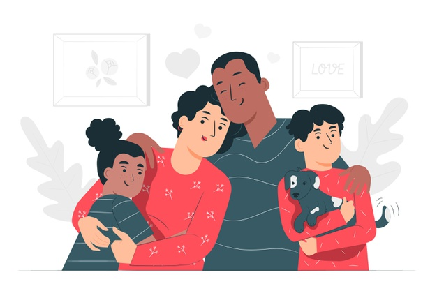
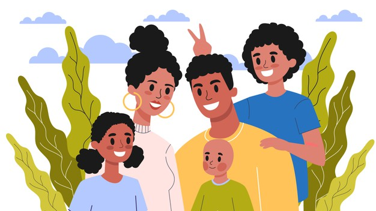

Undestand that your support is important.
The small things we say or do can make a big difference to the person going through a mental struggle.
Even a simple recognition of someone's struggles can offer great relief to that person.

Do not be afraid to start the conversation.
Due to mental health stigma, a person may not feel comfortable starting the conversation around their struggles.
Do not be afraid to take the first move. They will greatly appreciate it, even if they do not explicitly say so at first.

Try your best not to feel upset or get emotional.
It is normal to feel upset if someone you care about is struggling. But staying calm and composed will give them
more self-assurance and increase their confidence to openly talk about their struggles.

Stay connected and check up on them.
Do not feel obliged to always be there for them, but staying connected (physically or virtually) and checking up
on them every once in a while will give them much needed support if they are going through a tough period.
Offer practical help whenever you can.
Little acts of kindness, like offering to do the groceries for them, doing the dishes for them, or going to
appointments with them will offer extensive psychological support and re-assure them that you will always be there for them.

Do not force your support or go behind their backs.
Do not force someone to talk to you or get help if they feel uncomfortable, and especially do not go to a
professional on their behalf. This will make them feel powerless and think that they cannot speak for themselves.

Take care of yourself throughout the process.
When taking care of someone, do not forget to take some "me" time in the process. Take some time off to
relax and do something you enjoy. Neither you nor the person you are helping will benefit if you are constantly under distress.
Attempt to connect them with professional help.
If you feel helpless in supporting them or if you feel that their mental health is affecting their daily
lives and they may benefit from further support, try to get them to talk with industry professionals who are specialists in such issues.